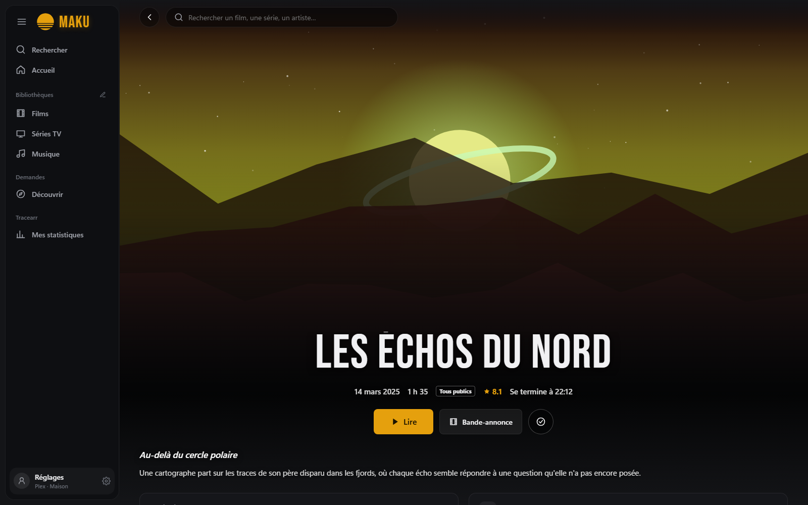
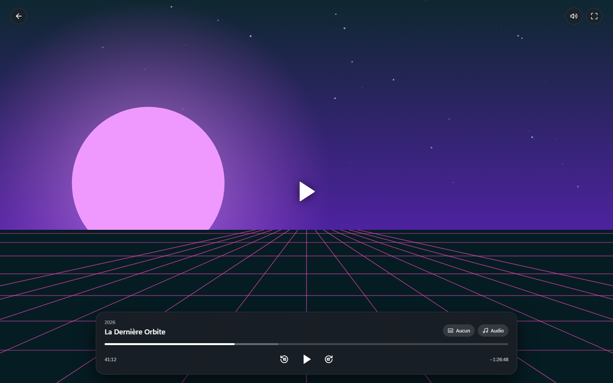
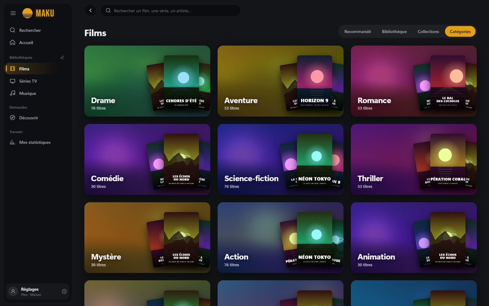
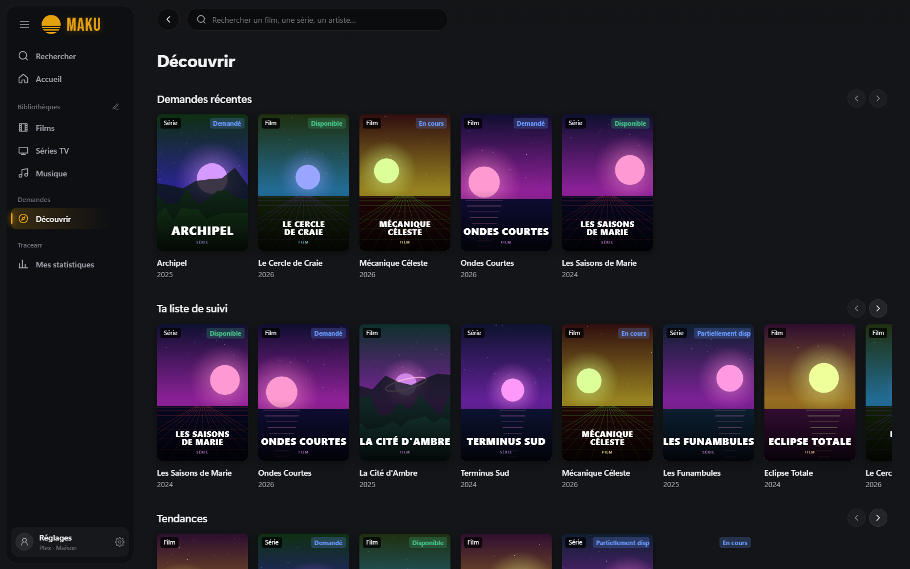
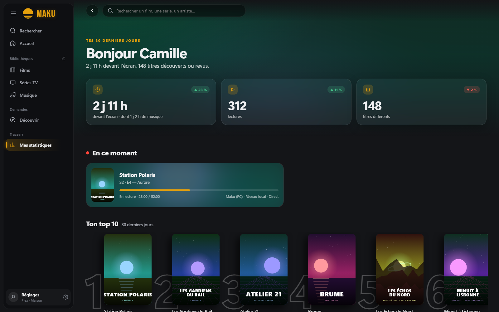

Client Plex · Jellyfin · Emby
Vos films, séries et musiques, comme sur une plateforme de streaming.
Maku est un lecteur libre et gratuit pour vos serveurs Plex, Jellyfin et Emby, pensé dès le départ pour être rapide et fluide : grandes affiches, fiches immersives et lecture de presque tous les formats, sur ordinateur, téléphone et TV.
Gratuit · Logiciel libre GPL-3.0 · Sans publicité ni collecte de données

Maku veut dire « rideau » en japonais : celui qui s'ouvre sur la séance. Son logo, un soleil couchant rayé, prend la couleur que vous choisissez dans l'interface.
Rapide et fluide, par conception
Pas d'attente, pas de saccades
Beaucoup de lecteurs font convertir la vidéo par le serveur, ou redessinent leur interface par-dessus chaque image : c'est là que naissent les temps de chargement et les saccades, surtout sur un téléviseur. Maku a été construit pour éviter les deux.
Une application légère
Un moteur écrit en Rust et une interface compilée, qui s'appuie sur le moteur web déjà présent dans votre système au lieu d'embarquer un navigateur entier. Maku démarre vite et consomme peu de mémoire.
La vidéo d'origine, sans détour
mpv sur ordinateur, le lecteur natif d'Android sur téléphone et TV : le fichier d'origine (4K, HEVC, HDR) est décodé par votre appareil. Pas d'attente le temps que le serveur convertisse, et une qualité intacte.
L'image dans sa propre couche
Sous Windows et Android, la vidéo est dessinée sous l'interface, dans une couche à part : l'interface n'a pas à se redessiner à chaque image. Résultat, une lecture fluide même sur un téléviseur modeste.
Le son tel qu'il a été mixé
Dolby, DTS et Atmos partent tels quels vers votre ampli ou votre barre de son. Les sons que l'appareil ne sait pas lire sont décodés sur place, au lieu de faire convertir tout le film par le serveur.
Une interface TV allégée
Sur téléviseur, pas de flou, pas de carrousel animé ni de cartes qui s'agrandissent : tout ce qui coûte au processeur graphique est retiré. Le menu glisse sans que la page soit recalculée.
Toujours la route la plus courte
Maku teste les adresses de votre serveur et garde la plus rapide, locale avant distante. Il la revérifie à chaque changement de réseau. Et en revenant en arrière, la page précédente réapparaît aussitôt, au même endroit.
Fonctionnalités
Tout ce qu'il faut, rien de superflu
Une interface pensée comme celle d'une box TV, et les outils qu'on utilise d'habitude à côté de son serveur, réunis au même endroit. Chaque carte ouvre sa page détaillée.
Il lit (presque) tout
4K, HEVC et HDR sans conversion, pistes audio et sous-titres, passer l'intro, épisode suivant, lecture hors ligne.
Le lecteur →Vos bibliothèques mises en valeur
Grandes affiches, logos officiels, fiches immersives avec les notes IMDb, Rotten Tomatoes, TMDB et Allociné, catégories et collections.
Les bibliothèques →Une vraie interface musique
Playlists, Mix of Three, paroles synchronisées, radio d'artiste, enchaînement sans blanc, Chromecast, AirPlay et Android Auto.
La musique →Demandes avec Seerr
Les tendances et les sorties à venir, la fiche complète de chaque titre, et la demande d'un film ou d'une saison en un clic.
Les demandes →Statistiques Tracearr
Votre temps devant l'écran, votre top 10, vos genres préférés et votre plus gros marathon, avec votre compte Plex et sans clé d'API.
Les statistiques →TV, téléphone et voiture
Une interface pour la télécommande, une autre pour le pouce, la musique en arrière-plan et sur l'écran de la voiture.
Les appareils →Pour l'administrateur
Lectures en cours, débit, utilisateurs, réglages du serveur, fiches à modifier et invitations en QR code.
L'administration →Libre et respectueux
Aucun compte Maku, aucune publicité, aucune collecte : Maku ne parle qu'à vos serveurs. En français, anglais, espagnol, allemand et néerlandais.
Vos données →Aperçu
Un tour en images
Captures du mode démo : bibliothèque fictive, affiches générées par l'application. Cliquez sur une image pour tout savoir de cet espace.

Découvrir → La fiche d'un filmFond en grand, logo, notes, pistes et distribution.
Découvrir → Le lecteur intégréDes commandes discrètes, la vidéo d'origine.
Découvrir → Les catégoriesUn genre, une grande carte colorée. Découvrir →
La musiquePlaylists, Mix of Three, paroles et radio.
Découvrir →
La musiquePlaylists, Mix of Three, paroles et radio.

Découvrir → Découvrir avec SeerrTendances, sorties à venir et demandes.
Découvrir → Vos statistiquesVotre mois, votre top 10, vos records. Découvrir →
Sur la téléUne interface faite pour la télécommande.
Découvrir →
Sur la téléUne interface faite pour la télécommande.
 Découvrir →
Le tableau de bordPour l'administrateur du serveur.
Découvrir →
Le tableau de bordPour l'administrateur du serveur.
Télécharger
Télécharger Maku
Gratuit sur toutes les plateformes. Choisissez la vôtre, puis suivez le guide d'installation si besoin.
Windows
Windows 10 et 11. mpv est inclus, rien d'autre à installer.
Microsoft Store Installeur .exe / .msiAndroid et Android TV
Téléphones, tablettes, Android TV et Google TV (Android 7+). La version Google Play arrive bientôt.
Télécharger l'APK Google Play · bientôtFire TV
Une interface dédiée à la télécommande, légère pour rester fluide sur les téléviseurs.
Amazon AppstoremacOS
macOS 11 et plus, Intel et Apple Silicon. Installez mpv avec brew install mpv.
Linux
Paquets RPM (Fedora, RHEL), DEB (Debian, Ubuntu) et AppImage pour les autres distributions.
RPM · DEB · AppImageGuide
Bien démarrer
Tout ce qu'il faut savoir, pas à pas.
Installer
Windows, macOS, Linux, téléphone, Android TV et Fire TV, puis les mises à jour.
Le guide d'installation →Configurer
Se connecter à Plex, Jellyfin ou Emby, ajouter Seerr et Tracearr, inviter ses proches.
Le guide de configuration →Questions fréquentes
Un film muet, un antivirus inquiet, Android Auto, les téléchargements… les réponses.
Les questions →Un projet libre, fait avec soin
Maku est développé en Rust et Svelte, sous licence GPL-3.0. Une idée, un bug ? Le dépôt GitHub est ouvert à tous.